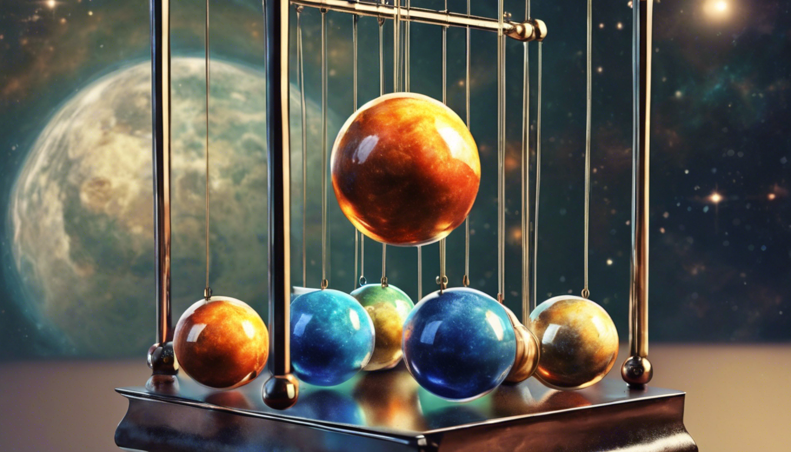

**Final Project Report**
Student Name: Tao Zhang
Student Number: 23-955-511
nethz: zhangta
# Motivational Image - Newton's Cradle

_By Stable Diffusion, with prompt:
"A 4-balls Newton's Cradle with the four balls (with different materials) being earth,
moon, sun and jupyter. The background is the galaxy. In painting style."_
# Features Overview
ID | Short Name |Points | Features
--------|---------------------------|-------|----------------------------------
5.1 | Advanced Camera Effects | 5 | Depth of Field
5.3 | Images as Textures | 5 |
5.7 | Intel's Open Image Denoise integration | 5 |
5.8 | Bump Mapping | 5 |
5.11 | Textured Area Emitters | 5 |
5.20 | Modeling Meshes | 5 |
15.3 | Environment Map Emitter | 15 |
15.5 | Disney BSDF | 15 | Subsurface, Roughness, Metallic, Specular, Clearcoat
Total | | 60 |
# Image As Texture (5pts)
`image_texture.cpp` inplements a child class of `Texture` which requires a image input, the importing is using
`stb_image.h` library as suggested in this [tutorial](https://learnopengl.com/Getting-started/Textures). The evaluation mapping from
uv coordinates to image color is introduced in this [blog](https://viclw17.github.io/2019/04/12/raytracing-uv-mapping-and-texturing).
Before returning the color, we need to do the inverse gamma correction to the color.
Additionally, for those DSDFs that I want to use image texture, I need to add texture for the albedo in `addChild()`.
**Comparison: Nori vs. Mitsuba**
# Bump Mapping (5pts)
`normal_texture.cpp` inplements almost the same as `image_texture.cpp` except that we dont need to do the inverse gamma correction, and
normalize each color channel $c$ by $c = 2c-1$ as suggested in this [tutorial](https://learnopengl.com/Advanced-Lighting/Normal-Mapping).
For those DSDFs that I want to use image texture, I need to add texture for the normal in `addChild()` and add a `get_Normal()` method to
return `m_normal` stored. In `shape.h` I add a function `setNormal()` which calls `getNormal()` and set the new normal to the shadow frame.
And we need to call `setNormal()` whenever a shape calls `setHitInformation()`.
**Comparison: Effect of both (image & bump) texture mappings**
# Textured Area Emitter (5pts)
This new class of emitter is implemented in `arealight_texture.cpp`, which is similar to simple area emitter, except that it
requires to set the uv value when doing the sampling.
So for both `EmitterQueryRecord` and `ShapeQueryRecord` we need to add a
`uv` member, and when we doing path tracing we need to set the uv value for those `EmitterQueryRecord`.
Additionally, when a shape calls `sampleSurface()`, now we also need to set the uv value for the `ShapeQueryRecord`.
**Comparison: Nori vs. Mitsuba**
# Part 4: Disney BRDF (15pts)
The implementation is in `disney.cpp` which is heavily based on the original author's [code](https://schuttejoe.github.io/post/disneybsdf/).
I had a very long and hard time to understand all the concepts behind the Disney BRDF, and I am still not sure if I fully understand it. Two
more main references I used are the original [paper](https://media.disneyanimation.com/uploads/production/publication_asset/48/asset/s2012_pbs_disney_brdf_notes_v3.pdf) and
one of UCSD's [homework](https://cseweb.ucsd.edu/~tzli/cse272/wi2023/homework1.pdf), but they are still fairly inconsistent with each other.
My implementation still use the anisotropic version GTR2 and GGX functions, but I just pass the same value to both $\alpha_x$ and $\alpha_y$ to
make it isotropic. The GTR2_aniso function I used for sampling is derived in the supplementary B.2 section from the original [paper](https://media.disneyanimation.com/uploads/production/publication_asset/48/asset/s2012_pbs_disney_brdf_notes_v3.pdf).
While the sample procedure is the same as microfacet BRDF which uses a value `kd` indicating the probability of sampling diffuse reflection.
I originally chose `kd = (1 - m_metallic) * (1 - m_specular) - 0.25 * m_clearcoat`, but this gives me many fireflies. So I changed it to
simply `kd = (1 - m_metallic) / 2.f - 0.25 * m_clearcoat` which gives me much better results.
**Comparison: Specular**
**Comparison: Roughness**
**Comparison: Subsurface**
**Comparison: Clearcoat**
**Comparison: Metallic**
**Comparison: Nori vs. Mitsuba (m=.3, s=.1, r=0, ss=0, c=.3)**
**Warping Visualization & Chi Test for GTR2:**
**Warping Visualization & Chi Test for Disney BRDF (m=.5, s=.5, r=.1, ss=.5, c=.5):**
# Environment Map Emitter (15pts)
The implementation is in `environment.cpp` which is done by very straightforwardly following the original
[paper](https://web.cs.wpi.edu/~emmanuel/courses/cs563/S07/projects/envsample.pdf). The only thing we need to
add (which is also done in the Disney BRDF) is to estimate the luminance $l$ based on the RGB color, given by $l = 0.3r + 0.6g + 0.1b$.
Additinally, I found that often the environment map is too bright, so I use a `m_strength` parameter to scale the radiance when
the `eval()` method returns.
**Comparison: Nori vs. Mitsuba**
# Depth of Field (5pts)
This [tutorial](https://courses.cs.washington.edu/courses/csep557/99au/projects/trace/depthoffield.doc) from UWashington gives a
very clear intuition for me. The implementation is in `dof_camera.cpp`, different from the perspective camera, we have 2 additional
members `m_focalLength` and `m_apertureRadius`. The `sampleRay()` method is also different, we first sample a point on the aperture
and compute the focal point and the direction of secondary ray, and we update the `ray` with the new direction and origin.
**Comparison: Different Aperture Radius**
# Build My Own Meshes (5pts)
I am using Blender to build my own meshes, namely the frame and the bottom of my Newton's Cradle.
I mainly refer to this [tutorial](https://www.youtube.com/watch?v=EsufneMOvWA&t=1415s) to learn how to use Blender.
One important thing I found only when I was doing the final rendering is that the number of vertices of a bevel or a cylinder is
very important, I need to increase it to a considerable number to make it look smooth, because otherwise it does not have enough
geometry information.
**Bottom of Newton's Cradle:**
**Frame of Newton's Cradle:**
# Intel's Open Image Denoiser (5pts)
For this, I simply download the pre-built binaries from their official [website](https://www.openimagedenoise.org/index.html).
But to actually use it, I have to use another tool called [imagemagick](https://imagemagick.org/) to change the format of the image
and the endianness of the image. The commands I used are:
```
magick convert final.png -endian lsb final.pfm
.\oidnDenoise.exe --hdr final.pfm -o final_de.pfm
magick convert final_de.pfm final_de.png
```
And to make sure the denoiser actually works, I need to change the reconstruction filter to box filter before rendering. And the
denoising result is quite good.
**Comparison:**
# Final Rendering for my Newton's Cradle
For the balls I use the celestial body textures from [here](https://www.solarsystemscope.com/textures/), and to make them visible
in low light condition I make them emissive, and to make their surface more interesting I use different Disney BRDF for them. The frame is made
of metal thanks to metallic parameter in Disney BRDF, and the bottom is made of wood thanks to the wonderful texture from
[here](https://polyhaven.com/). The surface is also an textured area emitter, which is made of milky way. The background
if a starry night sky presented by the environment map emitter. Finally, I am looking at Jupiter using a depth of field camera.